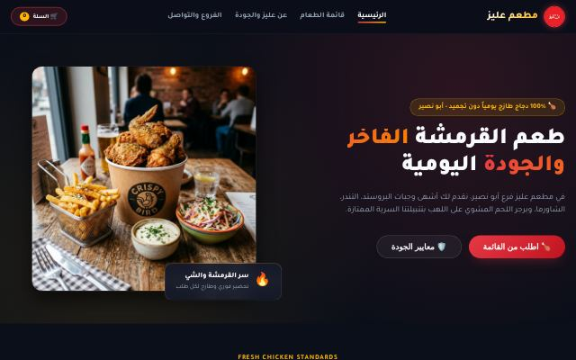

مطعم عليز — قائمة طعام وسلة طلبات
واجهة ويب لمطعم تعرض الأطباق وتجمع الطلب في سلة تحسب الإجمالي.

الفكرة
واجهة ويب لمطعم عليز (فرع أبو نصير) تعرض الأطباق بشكل واضح على الجوال، وتسهّل على الزائر تجهيز طلبه قبل التواصل مع المطعم.
ما بنيته
- قائمة أطباق مع فلترة حسب الصنف
- سلة طلبات مع تعديل الكميات وحساب الإجمالي تلقائياً
- قسم لأشهر الوجبات ومعرض صور للأطباق
- قسم يشرح معايير الجودة في المطعم
- موقع الفرع وطرق التواصل وطلب التوصيل
التقنيات
المُخرَج
واجهة تعمل كاملة داخل المتصفح بدون خادم خلفي، ويمكن تجربتها مباشرة من الرابط.
افتح الموقع